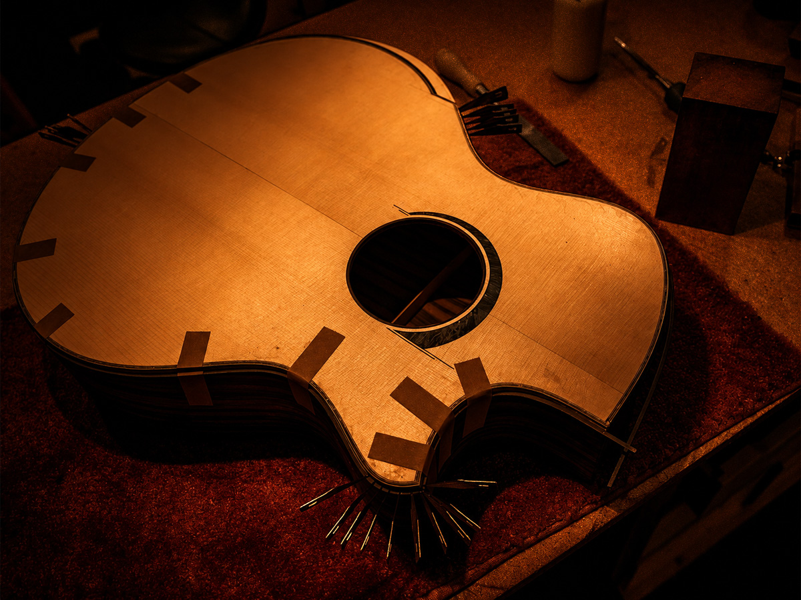

Selección
de maderas
Corte / lectura

Elegimos juntos cada tabla por su veta y sonido.

Sobre el curso
A lo largo de 12 semanas aprenderás cada etapa del oficio de la luthería clásica: desde la selección estratégica de tus maderas hasta el armado de la caja y el mástil. Trabajás con herramientas reales, en un taller pensado para grupos chicos. Terminás el curso con un instrumento propio, construido enteramente por vos, calibrado y listo para tocar.

PERSONALIZÁ TU INSTRUMENTO

01 — Selección de Madera
02 — Tipo de Guitarra Acústica
* Las combinaciones de maderas modifican la estética y el tono final del instrumento.
DE LA IDEA
AL INSTRUMENTO
Corte / lectura
Elegimos juntos cada tabla por su veta y sonido.
Forma / escala

Definimos escala y silueta según tu tipo de guitarra.
Ensamble / estructura

Aros, fondo y tapa toman forma real.
Lijado / ajuste

Trastes, cejuela y puente ajustados a mano.
Barniz / calibrado

Laca, pulido y calibración definitiva.
MEJORES MOMENTOS EN EL TALLER
Conociendo las maderas y las herramientas.
Cada alumno arma su sistema de bracings.
Manos a la obra con gubias y formones.
El día que cada alumno se lleva su instrumento.
RECOMENDACIONES DE ALUMNOS
"Llegué sin saber sostener un formón. Doce semanas después salí con mi propia guitarra clásica."
Julián Ferreyra
"El grupo chico hace toda la diferencia. Siempre hay un luthier corrigiendo a tiempo."
Camila Sosa
"Nunca pensé que iba a poder decir 'la construí yo'. El proceso completo vale cada semana."
Nico Aráoz